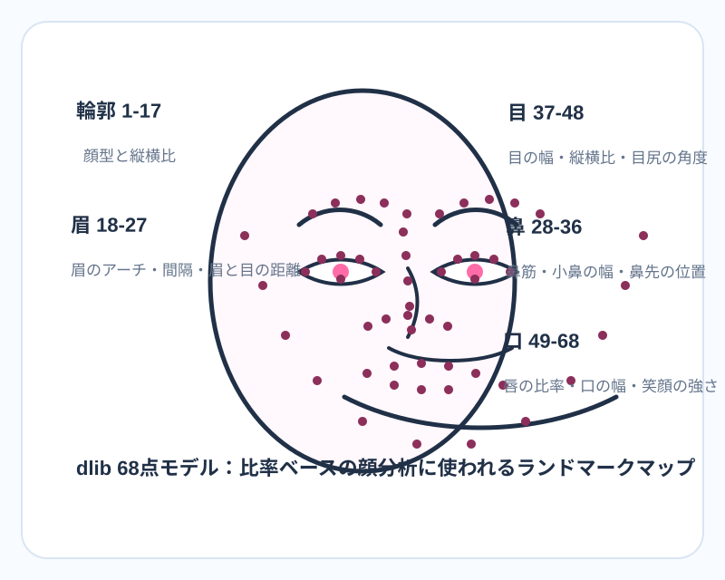
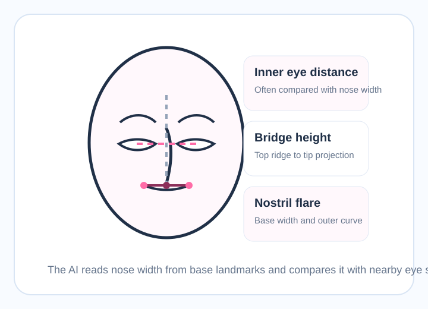
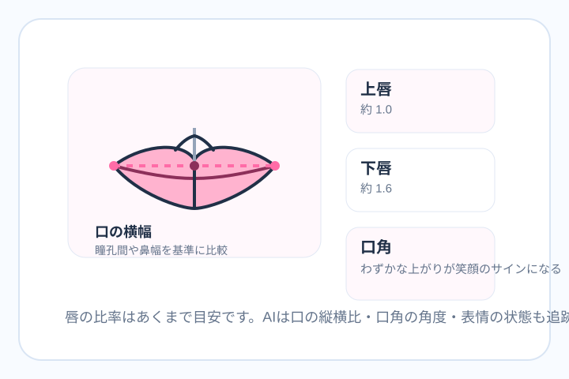
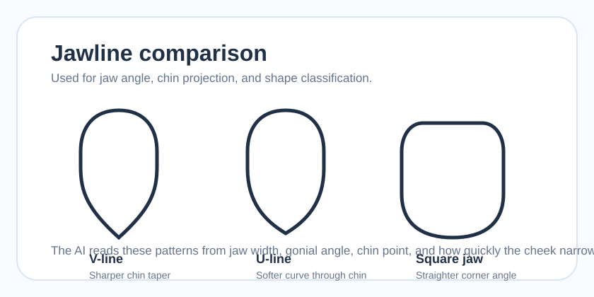
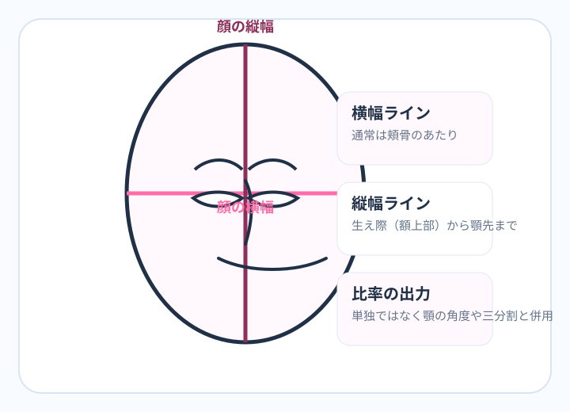
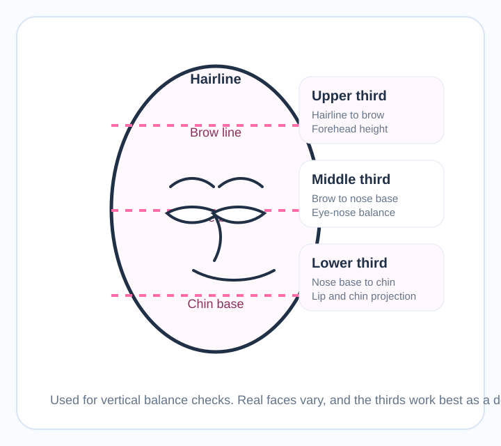
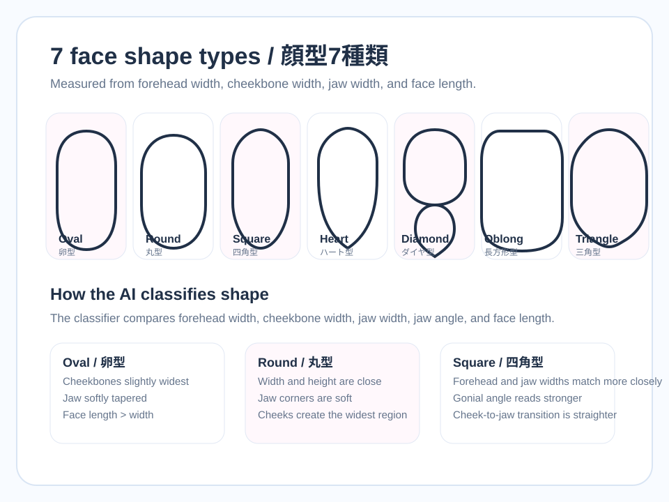
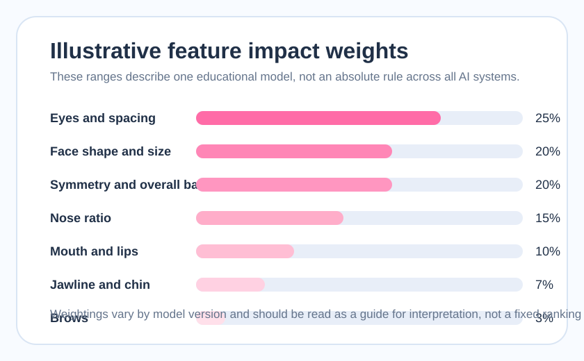

Pillar 4 Hub
顔のパーツ・ランドマーク完全解説｜目・鼻・口・輪郭が顔面偏差値に与える影響
目・鼻・口のどのパーツがスコアに一番影響するのか。これは、顔診断ツールを使ったあとにほとんどの人が抱く疑問です。実際のAIは「目だけ」「鼻だけ」のように単独で判定しているわけではなく、顔ランドマークと呼ばれる基準点から、各パーツの距離、角度、比率、左右差をまとめて読み取っています。このページは、その仕組みを日本語で図解しながら、目・鼻・口・顎・輪郭・眉毛の6ゾーンをどう解釈すればいいかを整理するハブです。
大切なのは、どの特徴も優劣ではなく「見え方の違い」として扱うことです。一重、丸顔、広めの鼻幅、しっかりした顎ライン、太めの眉は、欠点ではなくバリエーションです。ここでは、各パーツがどう測られ、どこで写真条件の影響を受け、どんなときにスコアがブレやすいのかを中立的に説明します。先に診断してから読むなら、下のツールから自分のパーツスキャンを始めてください。
先に診断してから読む → 自分のパーツスキャン
この診断は、目・鼻・口・輪郭・表情を写真上で読み取り、どのパーツが安定して検出されているかを確認する入口です。数値は人格や価値を表すものではなく、図解の内容を自分の写真に当てはめて比較するためのメモとして使ってください。
画像をドラッグ＆ドロップ または クリックして選択
対応形式: JPEG, PNG, WEBP
AIが解析中...
顔のパーツ位置とランドマークを抽出しています
総合判定
年齢
性別
感情
シンメトリー
笑顔
AIが検出する顔ランドマークとは？
顔ランドマークとは、AIが顔のどこを目・鼻・口・輪郭として読んでいるかを表す座標点です。人間は一瞬で「目頭はここ」「鼻先はここ」と判断できますが、モデルはその位置を数値化しないと比率も角度も計算できません。だから顔診断の土台は、まずランドマークを安定して置けるかどうかにあります。ランドマークが数ピクセルずれるだけでも、眼間距離、鼻幅、口角の角度、顎の狭さの見え方は変化します。
この分野でよく出てくる代表が、dlib系の68点モデルと、MediaPipe Face Mesh系の高密度モデルです。68点モデルは jaw 17点、眉 10点、鼻 9点、目 12点、口 20点という比較的わかりやすい構成で、教育コンテンツに向いています。一方でブラウザ側の顔トラッキングでは、Face Mesh系のようにより細かいメッシュが使われ、頬や唇のふくらみ、目の輪郭、輪郭全体をより密に表現できます。旧Face Mesh文脈では468点、現行のFace Landmarker taskでは478点出力を扱う実装もあり、記事やライブラリで数字が違って見えるのはこの差です。
顔スコア系サイトにとって重要なのは、点の多さそのものより「どの点がどの指標に使われるか」を明確に説明することです。jaw points は顔型や縦横比、brow points は眉間距離と眉山、eye corner points は目の横幅と眼間距離、nose base points は鼻幅、lip corners は口幅と笑顔の判定に結びつきます。ここを理解していると、同じ人でも写真条件によってなぜ結果が変わるのかがかなり読みやすくなります。

説明しやすく、どの点が何を測るかを学習しやすいことです。技術解説や教育記事で今も参照されやすい理由はここにあります。
ブラウザで高速に動き、輪郭の細部まで取りやすいことです。表情の変化や微妙な形の違いを追いやすく、実用寄りのツールで使いやすい特徴があります。
実装レベルで dlib 68-point と MediaPipe 系の違いをもっと深く知りたい場合は、ランドマーク技術の詳細 に進むと、点群の読み方とズレやすい条件をより技術寄りに追えます。
目の形・比率とスコアへの影響
顔パーツの中で、目まわりはもっとも検索需要が高く、実際にAIでも安定して差が出やすいエリアです。理由は単純で、目はランドマークが置きやすく、横幅、高さ、眼間距離、目尻の角度、眉との距離など、複数の指標が一気に計算できるからです。一般的なガイドでは、両目のあいだの距離が片目の横幅に近いと整って見えやすい、と説明されることが多いです。これは絶対的な理想値というより、左右差と中央の余白を読むためのわかりやすい基準だと考えると理解しやすくなります。
目の形を分類するときは、二重、一重、奥二重、垂れ目、つり目、丸目、細目、アーモンド型のような表現がよく使われます。ただし、これらは魅力の順位ではなく、まぶたの折り返し、目の開き、目尻の角度、横長か縦長かといった観察ポイントをまとめたラベルです。AIが直接「一重だから低い」「二重だから高い」と読むわけではありません。実際に使われるのは、eye aspect ratio のような開き量、目頭と目尻の角度、眼間距離、黒目と白目の見え方、写真の明るさです。
研究文脈では、limbal ring の見え方や白目の清潔感が健康シグナルとして読まれることがありますが、これも文化や撮影条件の影響を強く受けます。たとえば日本と韓国では二重まぶたに関心が向きやすい一方、西洋圏ではまぶたの線そのものより、目元全体のコントラストや表情の強さが重視される場面もあります。だから目の形を語るときは、ラベルそのものより、どの条件でその目が読みやすく魅力的に見えるかを考えるほうが建設的です。
二重まぶたと顔面偏差値の関係
二重まぶたは、上まぶたの折り返しが視認しやすいため、写真上で目の境界が見えやすいことがあります。その結果、アイメイクや光の当たり方も相まって目が大きく見え、AIの目開き指標や印象スコアに影響することがあります。ただし、一重や奥二重でも、眼間距離が安定していて、目尻の角度が自然で、白目の見え方がきれいなら十分に高い評価を出せます。まぶたの形は、優劣ではなく「どのように読まれやすいか」の違いです。

- アイラインや濃いシャドウで目尻位置が強調される
- 片目だけ影に入って白目の見え方が変わる
- 近距離の自撮りで眼間距離が実際より広く見える
- 伏し目や半目で eye aspect ratio が低く出る
自分の顔のパーツをAIで今すぐスキャン
無料でAI診断スタート自分の目の形を診断する
ここでは目そのものの順位を決めるのではなく、目の開き、眼間距離、眉との距離が写真上で安定して読まれるかを確認します。撮影角度を揃えて2枚比べると、目元指標がどれだけ光や距離に左右されるかが見えやすくなります。
画像をドラッグ＆ドロップ または クリックして選択
対応形式: JPEG, PNG, WEBP
AIが解析中...
目元と眉の位置関係を抽出しています
総合判定
年齢
性別
感情
シンメトリー
笑顔
鼻の形・高さ・比率とスコアへの影響
鼻は顔の中央にあるため、顔全体のまとまり感を左右しやすいパーツです。AIでは鼻先、鼻筋、鼻翼、鼻孔まわりの点から、鼻幅、鼻の長さ、鼻先の位置、鼻翼の広がりを読みます。よく使われる説明として、鼻幅が両目の内側の距離に近いとバランスが取りやすい、というものがあります。これも黄金律のような絶対基準ではなく、目と鼻が中央でどう連動して見えるかを確認するための目安です。
鼻の高さについても、単純に高いほど良い、という話ではありません。高い鼻筋は中央の立体感を作りやすい一方、正面写真では光が強すぎるとハイライトで鼻筋だけが浮き、逆にバランスを崩して見えることもあります。鼻先が丸い、やや幅広い、鼻孔が見えやすい、鼻筋が低めといった特徴も、文化や写真文脈次第で読み方が変わります。重要なのは、顔の中央で目・鼻・口がどうつながって見えるかです。
鼻が高いと顔面偏差値は上がる？
上がると断定はできません。日本や韓国の美容文脈では高めの鼻筋が好まれやすい一方、AIの実際のスコアは鼻単体ではなく、眼間距離、頬の影、顎とのつながり、正面写真での左右差と一緒に読まれます。鼻が高くても光が強すぎれば鼻先だけが飛んで見えますし、逆に鼻筋が控えめでも中央の比率が整っていれば十分に安定した印象が出ます。

口・唇の比率とスコアへの影響
口元は、骨格の魅力よりも「印象の動き」を作りやすいパーツです。AIは口角、唇の輪郭、開き具合から mouth aspect ratio や smile intensity を読みます。口幅は、瞳の内側や鼻幅との関係で説明されることが多く、上唇と下唇の比率はおおよそ 1:1.6 前後が調和的に語られることがあります。ただしこれも固定された正解ではありません。口元の評価は、歯が見える笑顔か、閉じた口か、口角が上がっているか、唇の輪郭がメイクで強調されているかで大きく変わります。
唇の厚さについても、文化差が大きい領域です。日本では自然な上品さや清潔感が重視されやすく、欧米ではボリューム感やコントラストが魅力として語られることもあります。だからAI結果を見るときは、薄い・厚いそのものを判定として読むのではなく、自分の口元がどんな比率で、どの表情だと最も自然に見えるかを確認するのが現実的です。
唇の厚さと顔面偏差値の関係
唇の厚さだけでスコアが決まることはありません。むしろ口角、上下比率、表情との一致、口の左右差のほうが結果に影響しやすいです。口紅や輪郭補正で見え方も変わるため、メイク有無を混ぜて比較すると、純粋な骨格差ではなく演出差を読んでしまうことがあります。

自分の顔のパーツをAIで今すぐスキャン
無料でAI診断スタート顎・フェイスライン・小顔の条件
日本の検索では「小顔」が強い関心を集めますが、AIが見ているのは単なる顔の小ささではなく、顔の縦横比、余白、顎先の形、下顎角、頬から顎へのつながり方です。たとえば face height-to-width ratio が高めだと縦長でシャープに、低めだと横に安定感のある印象に見えやすくなります。どちらが良い悪いではなく、顔型や写真演出が変わるという話です。
顎先の形は V字顎、U字顎、四角顎のように説明されます。ここでも大切なのは中立性です。Vラインは細く見えやすく、Uラインはやわらかく見えやすく、四角顎は骨格感が出やすいという違いにすぎません。AIは顎先の一点だけを見るのではなく、左右の jaw point 17点から、どこで幅が最大になり、どこで狭まり、顎角がどれくらい立つかを読みます。
さらに、顔の三分割比率もフェイスラインの印象を大きく左右します。上顔面、中顔面、下顔面の長さがどう見えるかで、顎が長く見える、幼く見える、落ち着いて見えるなどの印象差が出ます。下顔面が強く見える写真でも、それが骨格差なのか、顎を引きすぎているのか、レンズ歪みなのかを見分けないと、パーツ解説としては不十分です。
Vラインと顔面偏差値
Vラインが検索で人気なのは、顔の余白が減って見え、小顔イメージと結びつきやすいからです。ただし、AIが高く読むのは「Vであること」単体ではなく、目・鼻・口との位置関係まで含めて違和感が少ないことです。横幅が締まっていても、近距離レンズで下顔面だけ伸びると逆効果になるため、骨格と撮影条件は切り分けて考えるべきです。



顔の輪郭（フェイスシェイプ）7種類の完全ガイド
顔型は、このピラーでもっともシェアされやすいテーマです。卵型、丸型、四角型、ハート型、ダイヤ型、長方形型、三角型という7種類分類は、日本語でも英語でも検索需要が高く、AIの輪郭解説と相性が良いからです。顔型分類では、額の幅、頬骨の最大幅、顎の幅、顎角、顔の長さを組み合わせて、どの形に近いかを見ます。1人の顔が1つの型に完全一致するとは限らず、「丸に近い卵型」「ハート寄りのダイヤ型」のように中間もよくあります。
卵型は、頬骨がやや広く、顎が自然にすぼまるため、どの文化圏でも比較的「バランスが良い」と説明されやすい顔型です。丸型は縦横差が少なく、やわらかい印象になりやすい一方、写真によっては幅が出やすいです。四角型は顎角がしっかりしていて骨格感が出やすく、ハート型は額がやや広く顎が細めに見えやすいです。ダイヤ型は頬骨が最も強く、長方形型は縦が長め、三角型は下側に重心が出やすいなど、それぞれに見え方の特徴があります。
ここで重要なのは、顔型はヘアスタイルや前髪で大きく印象が動くことです。つまり「この顔型だから低い」ではなく、「この顔型ならどこに余白が出やすいか」「どこを見せると安定しやすいか」が実用的な読み方です。顔型は優劣のラベルではなく、髪型・メイク・撮り方を合わせるための地図だと考えると使いやすくなります。髪型寄りの実践に進みたい場合は、顔型に合う髪型・メイク に進むと橋渡ししやすいです。

頬骨が最も広く、顎へなめらかに細くなる。多くのスタイルを合わせやすい標準的な読み方になりやすい。
横幅と縦幅が近く、やわらかさが出やすい。余白の見え方で印象が大きく変わる。
顎角が比較的しっかりして見えやすい。骨格感を活かすか、やわらげるかで写真の方向性が分かれる。
額がやや広く、顎が細めに見えやすい。前髪やサイドの髪で見え方が調整しやすい。
頬骨の存在感が中心に出やすい。輪郭コントロールで印象が大きく変わる。
縦方向が長めに出やすい。サードゾーン比率や前髪との相性を見たい顔型。
下側に重心が出やすい。額まわりと顎まわりの余白の配分が鍵になる。
顔型だけを深掘りし、JP+EN で Oval / Round / Heart / Diamond を見分けたい場合は、顔型7種類 診断ガイド に進むと、より詳しい説明と髪型の方向性までまとめて読めます。
あなたの顔型は？今すぐチェック
顔型分類は、輪郭の余白と撮影距離の影響を強く受けます。同じ髪型、同じ距離で撮り比べると、自分の顔がどの型寄りに読まれやすいかがつかみやすくなります。
画像をドラッグ＆ドロップ または クリックして選択
対応形式: JPEG, PNG, WEBP
AIが解析中...
輪郭・顎・顔幅を抽出しています
総合判定
年齢
性別
感情
シンメトリー
笑顔
眉毛の形・位置がスコアに与える影響
眉毛は見落とされがちですが、AIにとってはかなり重要です。理由は、眉が目の上のフレームとして働き、顔上部の対称性や表情の方向を決めやすいからです。眉間距離が狭すぎるか広すぎるか、眉山の位置が左右でそろっているか、眉と目の距離がどれくらいかで、目元の印象は大きく変わります。特に、眉尻が片側だけ消えている、前髪で片眉が隠れる、メイクで形が極端に変わると、AIは目元全体の読み取りを誤りやすくなります。
68点モデルでは眉まわりの点数は多くありませんが、その少ない点でも眉頭、眉山、眉尻の位置関係は十分に拾えます。眉を整えるとスコアが変わることがあるのは、骨格が変わるからではなく、ランドマークが置きやすくなり、左右差が読みやすくなるからです。美容の観点でも、眉はもっとも低コストで印象を変えやすいパーツのひとつです。

変わることはあります。ただし変化の中心は「顔そのもの」ではなく、ランドマークの読みやすさ、左右差、目元の輪郭の見え方です。実践寄りの工夫は 顔面偏差値を上げる方法 で髪型・メイクと一緒に整理しています。
各パーツが顔面偏差値に与える影響度【まとめ表】
最後に、ユーザーがもっとも知りたい「何が一番大事なのか」を、教育用の目安として整理します。ここで示す割合は、このサイトで説明しているランドマーク型の比率読みをもとにした illustrative な配分です。実際のモデルや写真条件で上下しますが、目・輪郭・対称性が土台で、鼻・口・顎・眉がそれを支える、と考えると結果を読みやすくなります。

| パーツ | AIの測定方法 | 推定影響度 | 主な比率・指標 |
|---|---|---|---|
| 目の形と間隔 | 目頭・目尻・上下まぶたの座標、目尻角度 | 〜25% | 眼間距離、eye aspect ratio、目幅 |
| 顔の輪郭・サイズ | jaw 17点、顔の縦横比、余白 | 〜20% | face width-height ratio、頬幅、顎幅 |
| 対称性・全体バランス | 左右対応点の距離差 | 〜20% | 左右差、中心線ズレ |
| 鼻の形・比率 | 鼻先、鼻翼、鼻筋の位置 | 〜15% | 鼻幅、眼間距離、鼻長 |
| 口・唇の比率 | 口角、上下唇、口の開き | 〜10% | 口幅、上唇:下唇、口角角度 |
| 顎・フェイスライン | 顎先、下顎角、輪郭の絞り方 | 〜7% | 顎角、chin projection、三分割 |
| 眉毛の形・間隔 | 眉頭・眉山・眉尻の距離 | 〜3% | 眉間距離、brow-eye distance |
この配分はモデル説明用です。実際のスコアは、写真の明るさ、顔の向き、笑顔、髪のかかり方でもかなり動きます。「自分のパーツを今すぐスキャン」したい場合は、写真条件を固定したうえで何枚か比べるのが最も役立ちます。
よくある質問（FAQ）
目と鼻はどちらがスコアに影響大？
多くの顔スコアモデルでは、目の横幅、目の開き、眼間距離が安定して取れやすいため、目まわりの影響が少し大きめです。ただし鼻も顔の中央軸を作るので、目と鼻は切り離さず、中央バランスとして読むのが実際的です。
一重まぶただと顔面偏差値は下がる？
下がると決まっているわけではありません。一重、奥二重、二重は形の違いであり、AIが見ているのは目幅、眼間距離、左右差、光の当たり方、表情です。まぶたの種類だけで優劣をつける読み方は、このページの方針と合いません。
顔の輪郭はAIで変わる？
骨格が変わるわけではありませんが、写真上の見え方は大きく変わります。前髪、顔の向き、スマホの近距離広角、顎の上げ下げで jawline の取り方が変わるため、顔型分類は同じ人でも条件次第で少し動きます。
小顔は本当に高スコアになる？
小顔イメージは有利に働く場面がありますが、AIは顔の絶対サイズより、縦横比、余白、目鼻口の位置関係を読んでいます。近距離自撮りで鼻や下顔面が膨張すると、顔が小さくても総合バランスは下がることがあります。
眉毛を整えるとスコアは上がる？
上がることはありますが、理由は骨格変化ではなく読み取りやすさです。眉尻や眉山がはっきりすると、目元の左右差や brow-eye distance が安定して取れます。特に片眉だけ隠れる状態はスコアのブレ要因になりやすいです。
顔のパーツを変える方法は？
撮影距離、髪型、前髪、眉、光、表情、メイクで見え方はかなり変えられます。このピラーは施術を勧めるためではなく、自分のパーツがどう読まれるかを理解し、写真やスタイリングを調整するためのガイドとして作っています。
AIはメイクの影響を受ける？
受けます。アイラインは目尻位置、シェーディングは輪郭、ハイライトは鼻筋、リップライナーは口幅の見え方を変えます。だから比較するときは、メイク有無をそろえるか、違いを意図してメモしながら読むのが大切です。
整形するとスコアはどう変わる？
変わる可能性はありますが、変化量は施術内容、写真条件、回復状態に左右されます。二重形成、鼻、輪郭の施術はランドマーク位置に影響し得ますが、AIスコアだけを基準に意思決定するのはおすすめしません。
まとめ：パーツを知ってスコアを活かす
顔スコアを読むうえで大切なのは、目・鼻・口・顎・輪郭・眉毛のどれか1つを理想化することではありません。AIはランドマーク座標から複数の比率を読み、写真条件を含んだ「見え方」を数値化しています。だからこそ、パーツ解説を知ると、スコアを自分への評価ではなく、写真やスタイリングを整えるためのヒントとして使いやすくなります。
特徴の多くは生まれ持ったバリエーションで、どれも個人の価値を決めるものではありません。理解すると役立つのは、写真の余白、髪型、眉、表情、光の方向を調整しやすくなるからです。黄金比や魅力研究の土台を先に読みたいなら 顔の美しさの科学、実用面を強めたいなら 顔面偏差値を上げる方法 もあわせてどうぞ。
全パーツを総合診断する
ここまで読んだあとにもう一度診断すると、どのパーツの読み取りが安定しているかを前より具体的に確認できます。写真条件を変えながら比較し、「何点か」より「どこがどう読まれたか」に注目して使うのがおすすめです。
画像をドラッグ＆ドロップ または クリックして選択
対応形式: JPEG, PNG, WEBP
AIが解析中...
全パーツの座標とスコアを集計しています
総合判定
年齢
性別
感情
シンメトリー
笑顔
関連記事
まぶたタイプ、丸目、細目、アーモンド型の見分け方と写真上の見え方を深掘りします。
顔型7種類 診断ガイドJP+EN で顔型分類を整理し、ヘアスタイルとのつながりも確認できます。
鼻の形・美人比率ガイド鼻幅、鼻筋、鼻先の読み方を中央バランスの視点で詳しく解説します。
唇・口の比率 完全解説上唇と下唇、口幅、キューピッドボウ、口角の角度を整理します。
顎・フェイスライン診断小顔イメージ、顎角、Vライン、Uラインの見え方を深掘りします。
眉毛の形 美人ガイド眉間距離、眉と目の距離、整え方がスコアに与える影響を整理します。
AIランドマーク技術詳細解説dlib 68-point と MediaPipe 系の技術差を、開発者目線でより詳しく追えます。
顔のサードゾーン比率ガイド上顔面・中顔面・下顔面の長さが印象にどう効くかを専用にまとめています。
自分の顔のパーツをAIで今すぐスキャン
無料でAI診断スタート